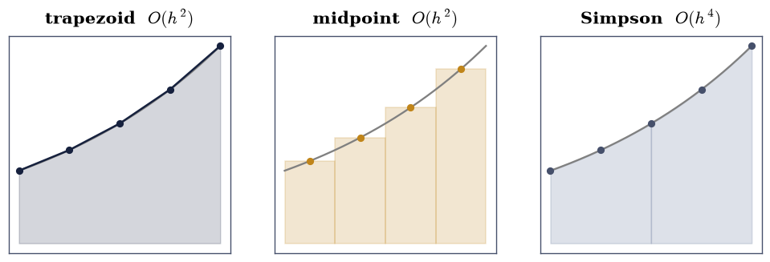
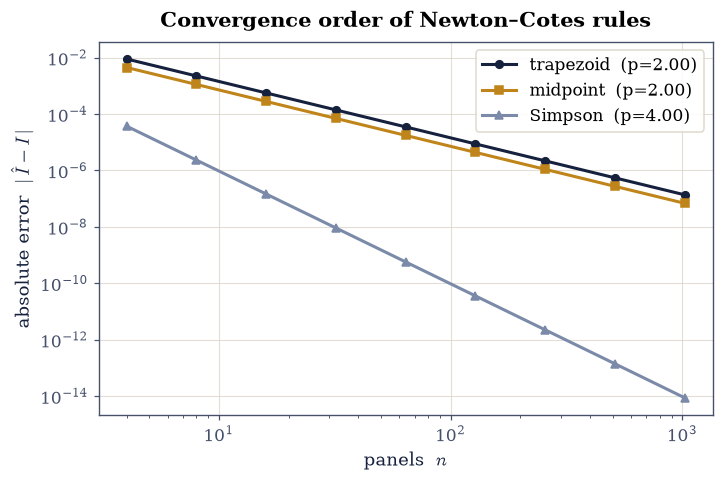
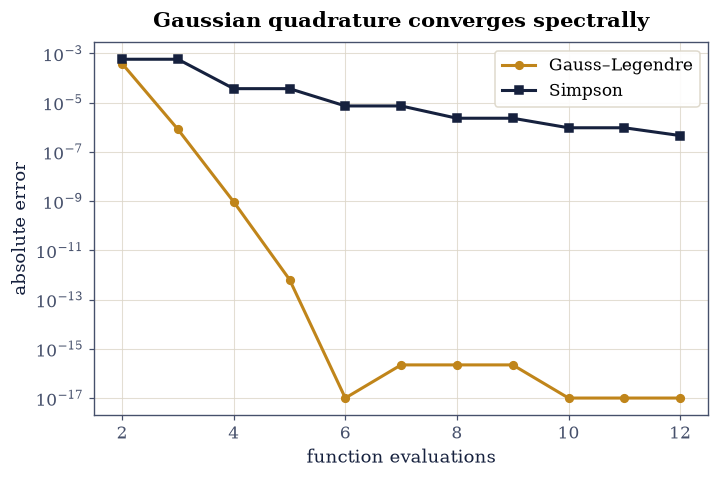
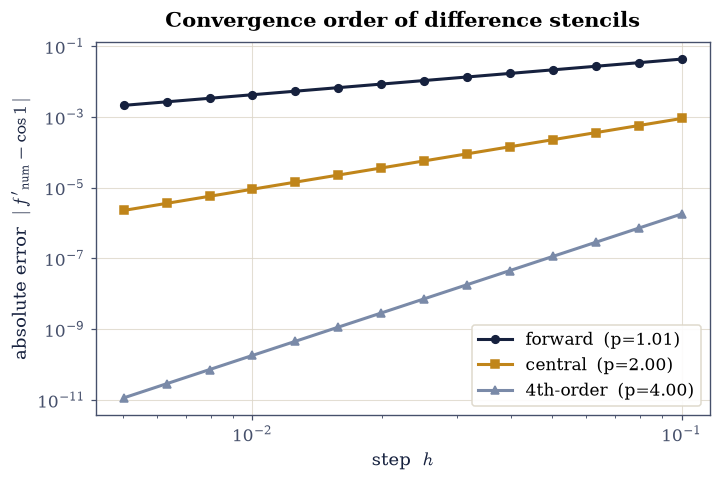
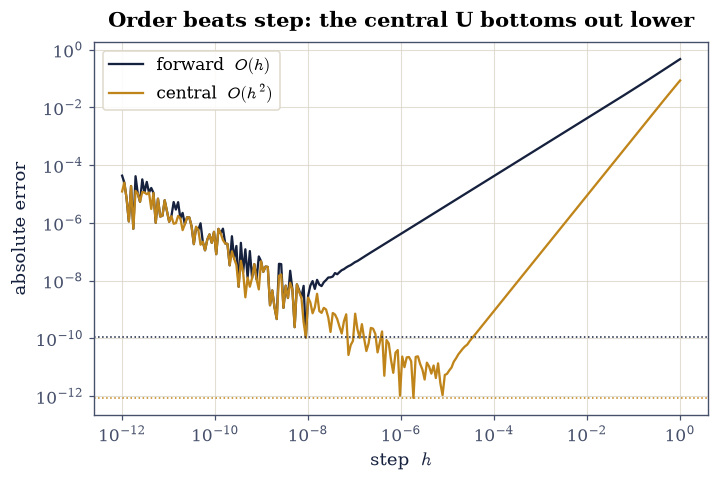

0.3 Numerical Integration and Differentiation#
Notebook overview#
The mathematical symbols \(\int_a^b f\,dx\) and \(f'(x)\) are familiar to us. Yet the question remains regarding exactly how a computer produces them when there is no antiderivative to write down and no symbol to differentiate, which is almost always, in real physics. The answers are quadrature rules (integrals as weighted sums of samples) and finite- difference stencils (derivatives as weighted differences), and the interesting part is not the formulas but their error behaviour: how fast each converges, and where round-off (§0.1) sets a floor that no smaller step can beat.
The throughline is order. A rule’s convergence order \(p\) (error \(\sim C\,h^p\)) is the single number that decides whether we need ten samples or ten thousand. We will measure \(p\) for the trapezoid, midpoint, and Simpson rules (2, 2, 4); double it for free with Richardson extrapolation; reach the spectacular efficiency of Gaussian quadrature (\(n\) points exact for degree \(2n-1\)); measure the orders of three derivative stencils (1, 2, 4); and close the loop with §0.1: for a smooth function, raising the order beats shrinking the step, because higher order reaches a lower error before round-off takes over.
This points forward: adaptive quadrature (Exercise 8) is the workhorse behind the orbital and scattering integrals of §2.4–§2.5 and the descent-time integral of §2.8. There are no animations here: nothing in this material moves; a convergence plot is best read as a still figure, and that is the right choice.
How to read the checks. Each exercise ends with a
validatecall against an independent fact: a known integral, a predicted order, an exactness result. A ✓ is strong evidence; a ✗ is a prompt to locate the discrepancy (an even-\(n\) requirement, an order fit on the round-off tail), not a verdict.
Theory in brief#
Quadrature: integrals as weighted samples#
A quadrature rule approximates \(\int_a^b f\,dx\) by a weighted sum of function values, and the rules differ only in which values and what weights. The simplest family, Newton–Cotes, fixes equally spaced samples \(x_i=a+ih\), \(h=(b-a)/n\), and reads the weights off the polynomial that interpolates them, so a better interpolant gives a better rule. A straight line through the panel endpoints yields the composite trapezoid rule,
sampling the panel centres instead gives the composite midpoint rule, also \(O(h^2)\) but typically with about half the error, since its over- and undershoots on a convex arc partly cancel:
Stepping up from a line to a parabola across each pair of panels gives Simpson’s rule, where one extra sample per pair of panels buys a remarkable two orders (all three error terms follow from the Taylor remainder of the interpolating polynomial; Press et al., Numerical Recipes, §4.1, tabulate them in full):
Order, Richardson, and Gauss#
The order \(p\) of a rule is defined by error \(\approx C\,h^p \approx C'\,n^{-p}\),
so \(p\) is minus the slope of a log–log error-vs-\(n\) plot. Richardson extrapolation combines two estimates to cancel the leading error term: since trapezoid error is \(\propto h^2\), the combination
is two orders better for free; iterating this is Romberg integration. (The Euler–Maclaurin formula supplies the underlying \(h^2\) series; Press et al., Numerical Recipes, §§4.2–4.3, develop it and build Romberg from it.) Gaussian quadrature goes further still: by choosing both the nodes and the weights optimally (the nodes are roots of Legendre polynomials), \(n\) points integrate every polynomial of degree \(\le 2n-1\) exactly,
and converges spectrally (faster than any fixed power of \(n\)) for smooth \(f\). The exactness theorem rests on the orthogonality of the Legendre polynomials; Press et al., Numerical Recipes, §4.6, give the proof.
Differentiation stencils and the round-off floor#
Derivatives combine samples with differencing weights. The forward, central, and fourth-order central stencils are
Each row follows from Taylor-expanding \(f(x\pm h)\) about \(x\) and cancelling the unwanted terms; Press et al., Numerical Recipes, §5.7, tabulate the standard stencils. As in §0.1, shrinking \(h\) helps only until round-off in the differenced numerator takes over; past that the error grows. The lever for a smooth function is therefore order, not step: a higher-order stencil reaches a lower error before hitting its round-off floor.
Setup#
import numpy as np
import matplotlib.pyplot as plt
from math import erf
from scipy.integrate import quad
from numpy.polynomial.legendre import leggauss
from ecp import validate
def trapezoid(f, a, b, n):
"""Composite trapezoid rule (eq-trap of the theory section).
Second-order quadrature: straight-line panels, the baseline Newton–Cotes rule.
Parameters
----------
f : callable
Integrand.
a, b : float
Limits.
n : int
Number of panels.
Returns
-------
float
The approximate integral.
"""
x = np.linspace(a, b, n + 1)
y = f(x)
h = (b - a) / n
return h * (0.5 * y[0] + y[1:-1].sum() + 0.5 * y[-1])
def midpoint(f, a, b, n):
"""Composite midpoint rule (eq-mid of the theory section).
Also second order, evaluating the integrand at panel centres.
Parameters
----------
f : callable
Integrand.
a, b : float
Limits.
n : int
Number of panels.
Returns
-------
float
The approximate integral.
"""
h = (b - a) / n
xm = a + (np.arange(n) + 0.5) * h
return h * f(xm).sum()
def simpson(f, a, b, n):
"""Composite Simpson rule (eq-simpson of the theory section).
Fourth order from parabolic panels — the order jump over trapezoid/midpoint.
Parameters
----------
f : callable
Integrand.
a, b : float
Limits.
n : int
Number of panels (even).
Returns
-------
float
The approximate integral.
"""
if n % 2:
n += 1 # Simpson needs an even panel count (parabolas span PAIRS of
# panels); rounding up silently beats raising in a teaching context, but the
# caller should know the effective n may differ by one
x = np.linspace(a, b, n + 1)
y = f(x)
h = (b - a) / n
return h / 3 * (y[0] + y[-1] + 4 * y[1:-1:2].sum() + 2 * y[2:-1:2].sum())
def fit_order(ns, errs):
"""Empirical convergence order p: minus the slope of log(error) vs log(n).
Parameters
----------
ns : array_like
Panel counts.
errs : array_like
Corresponding errors.
Returns
-------
float
The estimated order $p$.
"""
ns, errs = np.asarray(ns, float), np.asarray(errs, float)
# Exclude points at the round-off floor (0.1): once the error saturates near
# machine epsilon it no longer follows C·n^(−p), and including those points
# would drag the fitted slope toward zero.
m = errs > 1e-13
return -np.polyfit(np.log(ns[m]), np.log(errs[m]), 1)[0]
# Smooth test integral used throughout: ∫₀¹ eˣ dx = e − 1.
f_exp = np.exp
I_exp = np.e - 1.0
Exercise 1 — Trapezoid and midpoint from scratch#
The two simplest quadrature rules come from replacing \(f\) on each panel by something integrable: a straight line through the endpoints gives the trapezoid rule Eq. 11, and a flat line through the panel centre gives the midpoint rule Eq. 12. Both are \(O(h^2)\), but they err in opposite directions (trapezoid over-counts a convex arc, midpoint under- counts it), and the midpoint error is typically about half the trapezoid’s. Fig. 21 shows the three constructions on our running integrand \(e^x\).
Implement both rules (the
trapezoidandmidpointhelpers above).Test them on \(\int_0^1 e^x\,dx=e-1\) at a coarse and a finer panel count, watching the error shrink.
findfont: Failed to find font weight 600, now using 700.
findfont: Failed to find font weight 600, now using 700.

Fig. 21 How three Newton–Cotes rules sample the running integral \(\int_0^1 e^x\,dx\) over \(n=4\) panels of width \(h\): the trapezoid rule (dark) joins endpoints by straight lines, the midpoint rule (amber) uses flat panels at the centres, and Simpson’s rule (grey) fits a parabola across each pair of panels — gaining two orders of accuracy for one extra sample per pair of panels. The curve shown is \(e^x\) on \([0,1]\), the same integrand used throughout this notebook.#
Solution — Exercise 1#
n= 8: trapezoid err 2.24e-03, midpoint err 1.12e-03
n= 64: trapezoid err 3.50e-05, midpoint err 1.75e-05
Validation 1#
✓ trapezoid rule approximates ∫₀¹eˣ (coarse) [got 1.72052 vs expected 1.71828 (rtol=0.01)]
✓ trapezoid rule converges as panels are added [got 1.71832 vs expected 1.71828 (rtol=0.0001)]
True
Exercise 2 — Convergence order of Newton–Cotes (worked)#
The order \(p\) in error \(\approx C'n^{-p}\), Eq. 14, is what makes a rule worth using: it is minus the slope of a log–log error-vs-\(n\) plot. Trapezoid and midpoint are \(p=2\); Simpson is \(p=4\). This exercise measures those slopes directly.
For \(\int_0^1 e^x\,dx\), compute the error of each rule over a geometric sweep of \(n\).
Plot the errors log–log (Fig. 22).
Fit the slopes with the
fit_orderhelper (numpy.polyfitin log space) and compare to the theoretical orders 2, 2, 4.
measured orders: trapezoid 2.000, midpoint 2.000, Simpson 3.999

Fig. 22 Convergence of three Newton–Cotes rules on \(\int_0^1 e^x\,dx\): absolute error versus panel count \(n\) on log–log axes. The trapezoid and midpoint rules fall with slope \(-2\) (second order), Simpson with slope \(-4\) (fourth order); the midpoint error sits about a factor two below the trapezoid’s. Slopes are \(-p\) in error \(\approx C n^{-p}\) (Eq. 14).#
Validation 2#
✓ trapezoid is second order [got 1.99988 vs expected 2 (rtol=1e-06)]
✓ midpoint is second order [got 1.99979 vs expected 2 (rtol=1e-06)]
✓ Simpson is fourth order [got 3.99867 vs expected 4 (rtol=1e-06)]
True
Exercise 3 — Simpson’s rule and the order jump#
The jump from \(O(h^2)\) to \(O(h^4)\) at Simpson’s rule Eq. 13 is the best bargain in elementary quadrature: replacing each straight-line panel by a parabola costs one extra sample per pair of panels but squares the error’s dependence on \(h\). At a fixed, modest \(n\) the difference is already dramatic.
For the integral \(\int_0^1 e^x\,dx\) (exact value \(e-1\)), compute the trapezoid and Simpson errors at the same small \(n=8\) subintervals.
Confirm Simpson is orders of magnitude better at identical cost.
at n=8: trapezoid err 2.24e-03, Simpson err 2.33e-06, ratio 962×
Validation 3#
✓ Simpson's parabolic panels gain orders over trapezoid at the same n [Simpson 2.33e-06 vs trapezoid 2.24e-03]
True
Exercise 4 — Richardson extrapolation → Romberg#
Because the trapezoid error is a clean power series in \(h^2\), two estimates at \(h\) and \(h/2\) contain enough information to cancel the leading \(O(h^2)\) term. The combination \(\big(4T(h/2)-T(h)\big)/3\), Eq. 15, is \(O(h^4)\) (Simpson’s rule in disguise) and iterating the cancellation up a triangular table is Romberg integration, which reaches very high accuracy from a handful of trapezoid evaluations.
For the integral \(\int_0^1 e^x\,dx\) (exact value \(e-1\)), form the Richardson combination \(\big(4T(h/2)-T(h)\big)/3\) from the trapezoid estimates at \(n=16\) and \(n=32\), and show it is far more accurate than either input.
Build a small Romberg table and watch the accuracy climb column by column.
trapezoid(n=16) err 5.59e-04
trapezoid(n=32) err 1.40e-04
Richardson combination err 9.10e-09
Romberg corner R[4,4] err 3.31e-14
Validation 4#
✓ Richardson extrapolation of trapezoid is far more accurate [got 1.71828 vs expected 1.71828 (rtol=1e-06)]
True
Exercise 5 — Gaussian quadrature: the 2n−1 magic#
Newton–Cotes fixes the nodes at equal spacing. Gaussian quadrature frees them: with \(n\) nodes and \(n\) weights chosen optimally (the nodes turn out to be the roots of the degree-\(n\) Legendre polynomial), the rule integrates every polynomial up to degree \(2n-1\) exactly (Eq. 16). So \(n=3\) points nail any quintic, and for smooth functions the error falls spectrally, faster than any power of \(n\). We map the standard interval \([-1,1]\) to \([a,b]\) by \(x\mapsto \tfrac{b-a}{2}x+\tfrac{a+b}{2}\).
Integrate the polynomial \(p(x)=3x^5-2x^3+x-1\), whose exact integral over \([0,1]\) is \(-1/2\), with 3-point Gauss (
numpy.polynomial.legendre.leggaussfor the nodes and weights) and confirm it is exact.For the smooth integral \(\int_0^1 e^x\,dx\) (exact \(e-1\)), compare Gauss and Simpson errors versus the number of points (Fig. 23).
3-point Gauss on p(x)=3x⁵−2x³+x−1: -0.500000000000000 (exact -0.500000000000000)

Fig. 23 Gaussian quadrature versus Simpson’s rule on the smooth integral \(\int_0^1 e^x\,dx\): absolute error against the number of function evaluations (log \(y\)). Gauss–Legendre (amber) plummets spectrally — reaching machine precision by about eight points — while Simpson (dark) falls only as a fixed power; optimising node positions as well as weights is the decisive advantage for smooth integrands.#
Validation 5#
✓ 3-point Gauss is exact for degree ≤ 5 [got -0.5 vs expected -0.5 (rtol=1e-06)]
True
Exercise 6 — Numerical differentiation stencils#
Derivatives are built the same way: combine nearby samples with weights that cancel the unwanted Taylor terms. The forward difference Eq. 17 keeps only the first term and is \(O(h)\); the central difference cancels the second-order term by symmetry and is \(O(h^2)\); the fourth-order central stencil combines four points to cancel through \(O(h^4)\). More points, higher order.
Implement the three stencils of Eq. 17.
Measure their orders by differentiating \(f=\sin\) at \(x=1\) (so \(f'=\cos 1\) is the exact target), fitting the error-vs-\(h\) slopes (
numpy.polyfitin log space) over the truncation-dominated regime (Fig. 24).
stencil orders: forward 1.006, central 2.000, 4th 4.000

Fig. 24 Error of three finite-difference derivative stencils for \(f=\sin\) at \(x=1\) versus step \(h\), log–log, over the truncation-dominated range: the forward difference falls with slope \(1\), the central with slope \(2\), and the fourth-order central with slope \(4\) — each extra cancelled Taylor term steepens the convergence by one order (Eq. 17).#
Validation 6#
✓ forward difference is first order [got 1.00588 vs expected 1 (rtol=1e-06)]
✓ central difference is second order [got 1.99988 vs expected 2 (rtol=1e-06)]
✓ the 4th-order stencil is fourth order [got 3.9997 vs expected 4 (rtol=1e-06)]
True
Exercise 7 — Round-off revisited: order beats step (callback to 0.1)#
§0.1 showed a single derivative’s error is U-shaped in \(h\): truncation \(\sim h^p\) falling, round-off \(\sim \varepsilon/h\) rising, with a minimum at an intermediate \(h_\star\). The order \(p\) sets how low that minimum reaches. So for a smooth function the way to a more accurate derivative is not a smaller step (round-off caps that) but a higher-order stencil, whose U bottoms out lower, and at a larger (safer) \(h\).
Sweep \(h\) across many decades (
numpy.logspace) for the forward and central stencils, and plot both U-curves on one axis (Fig. 25).Confirm the central difference reaches a lower minimum error than the forward difference — and reaches it at a larger, safer step.
minimum error — forward 1.07e-10 at h=8.9e-09
minimum error — central 8.65e-13 at h=1.8e-06

Fig. 25 The differentiation error U-curve for two stencils on \(f=\sin\) at \(x=1\): each error (forward dark, central amber) falls with truncation as \(h\) shrinks, then rises as round-off \(\sim\varepsilon/h\) takes over (the floor of §0.1). The higher-order central difference bottoms out lower and at a larger \(h\) — raising the order, not shrinking the step, is what buys accuracy for a smooth function.#
Validation 7#
✓ the higher-order stencil reaches a lower error floor [central 8.65e-13 < forward 1.07e-10]
True
Exercise 8 — Adaptive quadrature in practice (synthesis)#
Production integrators do not use a fixed grid: they
place samples adaptively, refining only where the integrand varies, and
self-estimate their error. scipy.integrate.quad (adaptive Gauss–Kronrod) is
the workhorse, and it is exactly what the course leans on for the orbital and
scattering integrals of
§2.4–§2.5
and the descent-time integral of
§2.8. On a
sharply peaked integrand, a fixed grid of the same size misses the spike entirely
while the adaptive rule clusters its points there and nails it.
Integrate the narrow Gaussian spike \(f(x)=\exp\!\big[-(x-0.5)^2/(2\cdot 0.03^2)\big]\) on \([0,1]\) with
scipy.integrate.quad, against the closed form \(0.03\sqrt{2\pi}\,\operatorname{erf}\!\big(0.5/(0.03\sqrt2)\big)\approx0.0752\) (math.erf).Contrast with a fixed trapezoid grid spending a comparable number of evaluations, which misses the spike.
adaptive quad : 0.0751988482 (≈ 231 evals, est. err 1.5e-12)
fixed trapezoid: 0.0751988482 err 0.00e+00
exact : 0.0751988482
Validation 8#
✓ adaptive quadrature matches the known integral of a sharp peak [got 0.0751988 vs expected 0.0751988 (rtol=1e-08)]
True
Notebook summary#
Newton–Cotes quadrature with measured orders: trapezoid and midpoint second order, Simpson fourth; Richardson extrapolation building Romberg; and Gaussian quadrature exact to degree \(2n-1\).
Finite-difference stencils (forward first order, central second, a fourth-order stencil) and the round-off-versus-truncation tradeoff (callback to §0.1); adaptive quadrature in practice.
Outlook#
Singular and improper integrals. Endpoint singularities and infinite ranges are tamed by variable transformations: the tanh–sinh (“double exponential”) rule is a remarkably robust default.
Many dimensions. Tensor-product quadrature suffers the curse of dimensionality (\(n^d\) points); Monte Carlo integration trades order for dimension-independent \(O(N^{-1/2})\) error: a forward link to the statistical mechanics of Volume V.
Spectral methods. Clenshaw–Curtis quadrature and FFT-based differentiation achieve exponential accuracy for periodic/smooth functions (a forward link to §0.6).
Automatic differentiation. The exact alternative to finite differences: derivatives to machine precision with no step to tune, and the engine behind modern machine learning and gradient-based physics.
References#
Nicholas J. Higham. Accuracy and Stability of Numerical Algorithms. Society for Industrial and Applied Mathematics (SIAM), 2 edition, 2002.
William H. Press, Saul A. Teukolsky, William T. Vetterling, and Brian P. Flannery. Numerical Recipes: The Art of Scientific Computing. Cambridge University Press, 3 edition, 2007.